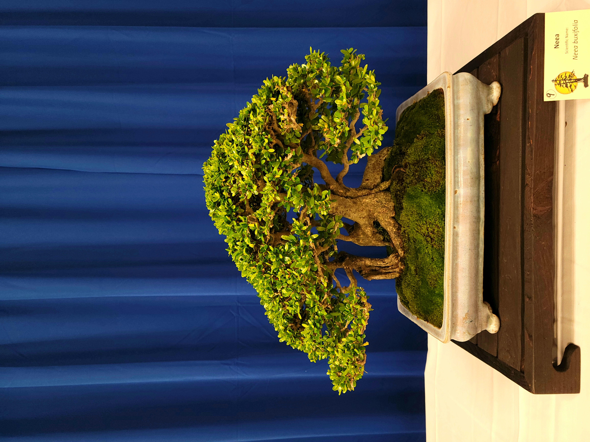
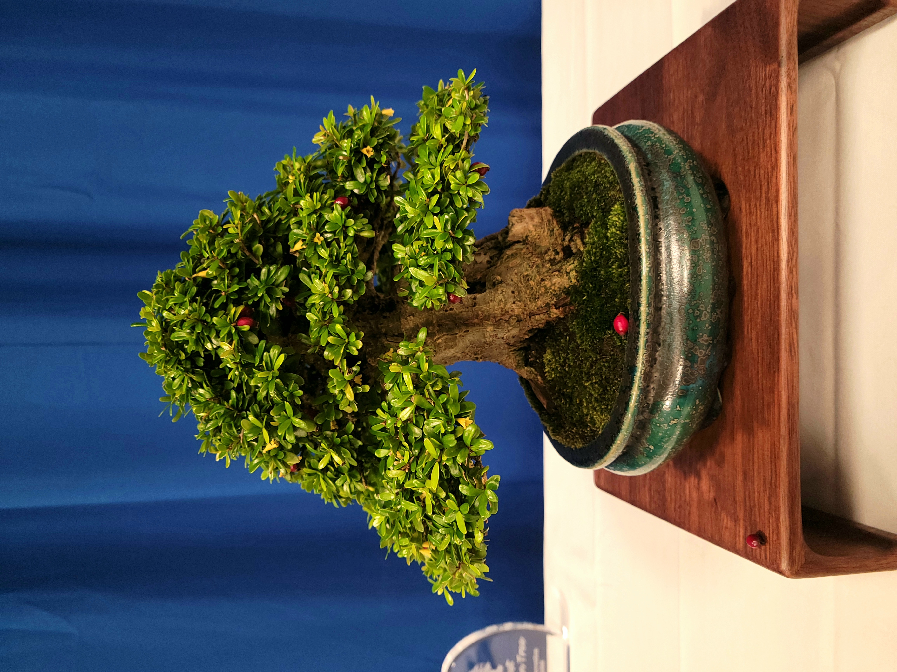
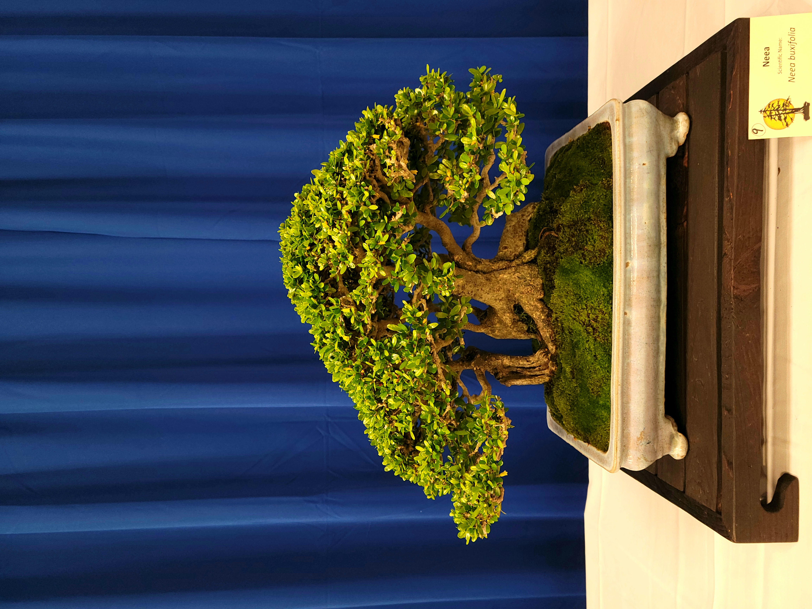
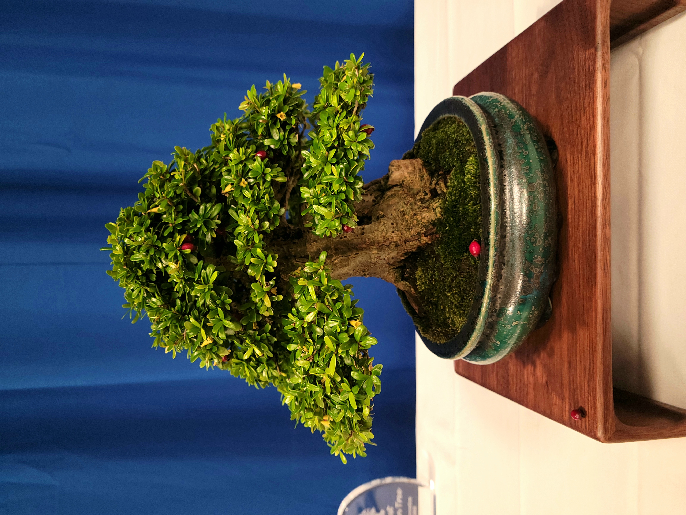

About myself
Hello! My name is Hary, I am Marine veteran with a slight passion for bonsai. I started this journey back in 2019 right before the pandemic. This hobby really relaxes me and allows me to be creative and learn more about the horticulture behind this art. I own quite a variety of trees from ficus to Elms to Junipers and more... This website is created for fun. I will post my trees here and write down information about them. This webpage is still under construction, so please bear with me. I am looking forward to seeing how I will combine my computer skills and bonsai skills to better make this website a hub for knowledge and learning!
What is a Bonsai?
Bonsai is a Japanese art form involving the cultivation of miniature trees that mimic the shape and scale of full-sized trees. The word "bonsai" comes from the Japanese terms "bon" (meaning tray or pot) and "sai" (meaning plant or cultivation), essentially meaning "planted in a container." The primary goal of bonsai is to grow trees that remain small while still exhibiting the same characteristics as their full-sized counterparts. This is achieved through various techniques, including pruning, wiring, and careful control of the tree's environment. There are many traditional bonsai styles, such as the formal upright, informal upright, slanting, cascade, and semi-cascade. Each style has specific rules and aesthetics. Bonsai requires careful attention to watering, fertilizing, and positioning. The tree must be kept in conditions that suit its species, including light, temperature, and humidity. Bonsai is not just about growing a small tree; it's about creating a living piece of art that reflects the beauty and balance of nature.
Photos of Bonsai
 



Source: Bonsai Of Central Florida Convention 2023